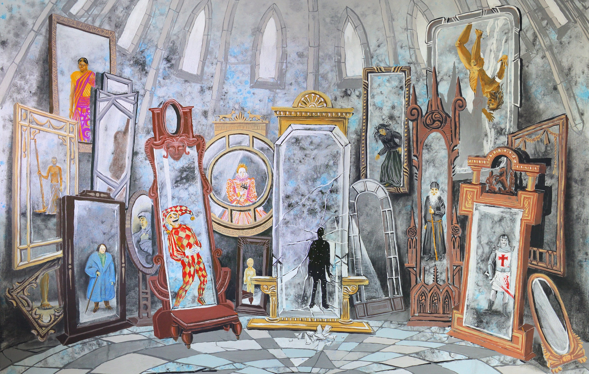

“Do not be too timid and squeamish about your actions. All life is an experiment. The more experiments you make the better. What if they are a little coarse, and you may get your coat soiled or torn? What if you do fail, and get fairly rolled in the dirt once or twice. Up again, you shall never be so afraid of a tumble.”
— Ralph Waldo Emerson
Previously, I’ve argued that improbable doesn’t mean impossible. If my old argument isn’t convicing enough, I encourage you to take a look at this Veritasium video explaining why most published research is wrong.
In the same vein, I am advocating today for you to conduct psychological experiments on youself rather than relying solely on previous research. I’m not the first person to come up with this idea. Mahatma Gandhi’s autobiography, “My Experiments with Truth,” reflects his approach to understanding himself and human psychology through experimentation.
Let me give you an example.
To provide an example of the kind of psychological experiment one can undertake, let me share my personal experience.
Throughout my life, I have considered myself an introvert, preferring the company of ideas over people. Some people might call me ambivert (or anyone an ambivert, treating the terms introvert and extrovert as extremes). Nonetheless, I had been more of an introvert than an extrovert. I had enjoyed company of ideas more than people.
When I was starting my graduate school, I was moving to a new country (United States). No one knew me there. There was zero emotional baggage and expectations on who I was. My identity was small.
My undergraduate psychology class had taught me a cardinal rule about behaviours.
Attitude + Stimulus = Behaviour
Some psychologists replace attitude in this equation with personality; Buddhists replace this with Sanskara. I found this true from my own experience.
I thought: if can’t change my attitude, what happens if I change my behaviour? I know how I, an introvert, would react to a situation and how an extrovert would react to it. If I emulate how an extrovert would react, would I become an extrovert?
As it turns out, yes.
My friends in US would not call me an introvert (I think). Harshvardhan of here behaves differently in situations than Harshvardhan of the past. (I’ve since come to realise extroversion is more energy-consuming than introversion, and thus use extroversion as a tool in situations when I need it.)
If I had instead read psychological studies on it, I will have to find four large-scale field experiments had tried to test if subjects were able to change their personalities and attitudes by modifying their behaviour, if I’m lucky. The studies would’ve been successfully replicated, if I’m lucky.
And then, I would still have to do the work of coming up with a plan on how to use this conclusion in my own life. Or get help from a therapist who can guide me through it — a time-consuming option that might still not work.
Therefore, I recommend you to experiment on yourself and test if it works. Experimentation is cheap. It takes a week and you’d know the results. Since you’ve experimented on yourself, you know it works for you, which is a major problem with most psychological research — they don’t generalise well.
Here are two simple examples.
How long do you need to sleep? - Choose a three-day window where you will sleep for five hours, track your mood and how good you feel after waking up, and then revert to your normal sleep pattern. - Repeat the experiment for six hours of sleep during the next three-day window, and continue until you have tested all desired time-periods. - Remember to sleep “normally” between the experiments, i.e. for four days a week. - Through this experiment, you can discover how many hours of sleep work best for you, which is likely to vary from the commonly cited average of eight hours for adults.
How to be more curious? - Think and recall every single curious person you know of. Sherlock Holmes. Richard Feynmen. Socrates. - How would they react to a particular situation that you’re facing right now? - Modify your behaviour to align with their behaviour. This would make you feel uneasy but remember its an experiment. You can decide from results that you’d rather not like to be a naturally curious person. - If you enjoy the modified behaviour, repeat. Soon you will have modified attitude — you’d be more curious. If you don’t like it, stop. Being naturally curious is not for you.
Do not disclose your experiments to others; definitely not while you’re doing them. The energy required to explain yourself can be better spent focusing on the experiment. With this experimentation, you are already beyond your comfort zone, and discouragement from others may hinder your progress.
Instead of relying solely on previously published psychological research, I suggest conducting personal experiments on oneself to test and develop new behaviors and attitudes. Experimentation is a cheap and effective way to determine what works best for you, and it allows for personalised results that can be applied directly to one’s life. By trying new things and modifying one’s behavior, a person can discover how to optimize their sleep, cultivate curiosity, or any other aspect of their life one wishes to improve.
Recently, Dea pointed me to this article (and this guy, Max Hawkins) who had randomized his life, taking experimentation to the heart. This shows me exactly one should strive for — experimenting new places to visit, new food to eat, and new activities to try.
You can watch his TED Talk here.